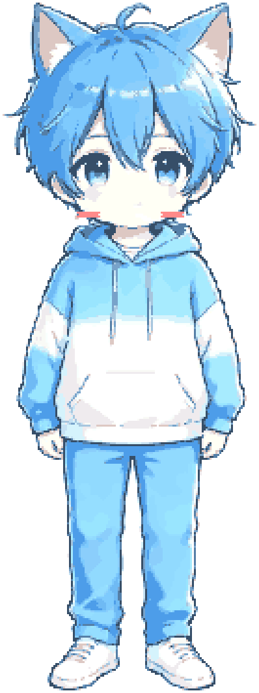

<!doctype html>
<html lang="zh">
  <head>
    <meta charset="UTF-8" />
    <meta name="viewport" content="width=1920, height=1080" />
    <title>Lumina — 六座岛，一条光</title>
    <script src="./assets/js/gsap.min.js"></script>
    <link rel="stylesheet" href="./assets/css/film.css" />
  </head>
  <body>
    <div
      id="root"
      data-composition-id="main"
      data-start="0"
      data-width="1920"
      data-height="1080"
      data-duration="65"
    >
      <div class="layer" id="layer-far"></div>
      <div class="layer" id="layer-mid"></div>
      <div class="layer" id="layer-line">
        <svg id="spine" viewBox="0 0 9600 1080" aria-hidden="true">
          <defs>
            <mask id="spine-mask" maskUnits="userSpaceOnUse" x="0" y="0" width="9600" height="1080">
              <rect id="spine-window" x="250" y="0" width="0" height="1080" fill="#fff" />
              <!-- local erasers: where a studio replaces the line with its own gesture -->
              <rect id="gap-voice" x="4036" y="505" width="728" height="112" fill="#000" opacity="0" />
              <rect id="gap-engine" x="2500" y="498" width="800" height="132" fill="#000" opacity="0" />
            </mask>
          </defs>
          <g mask="url(#spine-mask)">
            <path class="halo" d="M250 560H9200" />
            <path class="core" d="M250 560H9200" />
            <g id="spine-ticks" opacity="0.5"></g>
          </g>
          <circle id="head-dot" cx="250" cy="560" r="4" fill="#ffffff" opacity="0" />
          <circle id="end-dot" cx="9200" cy="560" r="0" fill="#ffffff" opacity="0" />
        </svg>
      </div>

      <div id="vignette"></div>
      <div id="grain"></div>

      <audio
        id="bgm"
        src="assets/audio/bgm.wav"
        data-start="0"
        data-duration="65"
        data-track-index="10"
        data-volume="0.85"
      ></audio>
    </div>

    <script>
// Lumina — 六座岛，一条光 · data for the six studios.
// Logos are the site's own series-card graphics (monochrome, one per studio).
(function () {
  window.LUMINA = (function () {
        const STUDIOS = [
          { id: 'core', x: 1400, start: 7.5, end: 13.0, name: 'AI Core', tag: '01' },
          { id: 'engine', x: 2900, start: 14.5, end: 22.9, name: 'Engine', tag: '02' },
          { id: 'voice', x: 4400, start: 24.0, end: 29.5, name: 'Voice', tag: '03' },
          { id: 'artist', x: 5900, start: 31.0, end: 37.0, name: 'Artist', tag: '04' },
          { id: 'animate', x: 7400, start: 38.5, end: 45.0, name: 'Animate', tag: '05' },
          { id: 'ar', x: 8900, start: 46.5, end: 56.6, name: 'AR', tag: '06' },
        ];

        const LOGO = {
          core: `<svg viewBox="0 0 200 150" fill="none"><g stroke="currentColor" stroke-width="1.1" opacity=".4"><circle cx="128" cy="72" r="56" stroke-dasharray="1 8"/><circle cx="128" cy="72" r="42"/><circle cx="128" cy="72" r="27" stroke-dasharray="2 6"/></g><path d="M96 58h44a8 8 0 0 1 8 8v16a8 8 0 0 1-8 8h-22l-12 10v-10h-10a8 8 0 0 1-8-8V66a8 8 0 0 1 8-8Z" stroke="currentColor" stroke-width="1.6"/><path d="M104 72h22M104 79h14" stroke="currentColor" stroke-width="1.6" stroke-linecap="round"/><circle cx="166" cy="42" r="3" fill="currentColor"/><circle cx="88" cy="104" r="2" fill="currentColor"/></svg>`,
          engine: `<svg viewBox="0 0 200 150" fill="none"><rect x="44" y="36" width="112" height="78" rx="4" stroke="currentColor" stroke-width="1.6"/><g stroke="currentColor" stroke-width="1.2" opacity=".45"><path d="M60 52v46M76 52v46M92 52v46M108 52v46M124 52v46M140 52v46"/><path d="M56 70h88M56 88h88"/></g><g fill="currentColor"><rect x="72" y="66" width="12" height="8" rx="1"/><rect x="104" y="84" width="12" height="8" rx="1"/><rect x="124" y="66" width="12" height="8" rx="1"/></g><path d="M44 30v-8M156 30v-8M44 120v8M156 120v8M38 44h-8M38 106h-8M170 44h-8M170 106h-8" stroke="currentColor" stroke-width="1.4" stroke-linecap="round"/></svg>`,
          voice: `<svg viewBox="0 0 200 150" fill="none"><g stroke="currentColor" stroke-linecap="round"><path d="M14 48c22-22 34 22 56 0s34 22 56 0 34 22 56 0" stroke-width="1.4" opacity=".4"/><path d="M14 68c22-18 34 18 56 0s34 18 56 0 34 18 56 0" stroke-width="1.6" opacity=".7"/><path d="M14 88c22-14 34 14 56 0s34 14 56 0 34 14 56 0" stroke-width="2"/><path d="M14 108c22-10 34 10 56 0s34 10 56 0 34 10 56 0" stroke-width="1.4" opacity=".4"/></g><g fill="currentColor"><circle cx="42" cy="118" r="2.2"/><circle cx="98" cy="124" r="1.6"/><circle cx="152" cy="116" r="2.4"/></g></svg>`,
          artist: `<svg viewBox="0 0 200 150" fill="none"><g stroke="currentColor" stroke-linecap="round"><path d="M30 112c18-56 52-76 92-62" stroke-width="9" opacity=".16"/><path d="M44 124c26-42 58-58 96-44" stroke-width="5" opacity=".35"/><path d="M62 128c30-26 58-36 92-26" stroke-width="2.4"/><path d="M78 42c18 10 26 24 26 44" stroke-width="1.4" opacity=".5"/></g><g fill="currentColor"><circle cx="88" cy="38" r="2.4"/><circle cx="146" cy="96" r="2"/><circle cx="56" cy="94" r="1.6"/></g><path d="M136 40l3.2 8.2L148 51l-8.8 3L136 62l-3.2-8L124 51l8.8-2.8Z" stroke="currentColor" stroke-width="1.3"/></svg>`,
          animate: `<svg viewBox="0 0 200 150" fill="none"><g stroke="currentColor" stroke-width="1.6"><rect x="24" y="34" width="46" height="62" rx="3" opacity=".35"/><rect x="80" y="24" width="46" height="72" rx="3"/><rect x="136" y="34" width="40" height="62" rx="3" opacity=".35"/></g><g fill="currentColor"><rect x="96" y="40" width="14" height="10" rx="1"/><rect x="92" y="50" width="22" height="16" rx="1" opacity=".85"/><rect x="96" y="66" width="5" height="14"/><rect x="105" y="66" width="5" height="14"/></g><path d="M24 118h152" stroke="currentColor" stroke-width="1.4"/><g fill="currentColor"><circle cx="47" cy="118" r="2.2" opacity=".45"/><circle cx="103" cy="118" r="2.2"/><circle cx="156" cy="118" r="2.2" opacity=".45"/></g><path d="M103 112v12" stroke="currentColor" stroke-width="1.7"/><path d="M92 134l11 7 11-7" stroke="currentColor" stroke-width="1.2" stroke-linecap="round" stroke-linejoin="round" opacity=".55"/></svg>`,
          ar: `<svg viewBox="0 0 200 150" fill="none"><g stroke="currentColor" stroke-width="1.5" opacity=".8"><path d="M44 34h26M44 34v26M156 34h-26M156 34v26M44 116h26M44 116v-26M156 116h-26M156 116v-26"/><rect x="70" y="52" width="60" height="52" rx="3" stroke-dasharray="3 4"/></g><g fill="currentColor"><circle cx="70" cy="52" r="2.6"/><circle cx="130" cy="52" r="2.6"/><circle cx="70" cy="104" r="2.6"/><circle cx="130" cy="104" r="2.6"/></g><path d="M70 52 130 104M130 52 70 104" stroke="currentColor" stroke-width="1" opacity=".3"/><path d="M86 86c0-9 7-16 16-16M118 66c4 4 6 10 6 16" stroke="currentColor" stroke-width="1.4" stroke-linecap="round"/></svg>`,
        };

        const CAPTION_EN = {
        core: 'The layer that talks back',
        engine: '1-bit inference, squeezed into CPUs',
        voice: 'Speaks with the network off',
        artist: 'Learn your character, then draw',
        animate: 'Make them move',
        ar: 'Put them on your desk',
      };

      const CAPTION = {
          core: '会聊天的那一层。',
          engine: '把 1-bit，塞进 CPU。',
          voice: '断网，也能开口。',
          artist: '先画你的角色，再画你的画。',
          animate: '把角色，做成会动的小人。',
          ar: '迟早，站上你的桌面。',
        };

        // ── per-studio art (each studio is authored in its own 1400×1080 box) ──
        // shared chrome for every studio: crop marks + the pool of light under the wire
      const FRAME = '<div class="crop"><i></i><i></i><i></i><i></i></div><div class="ground"></div>';

      const ART = {
          core: `
            ${FRAME}
          <div class="node" id="node-core" style="top:300px">01 / AI CORE</div>
          <div class="detail" style="left:250px;top:392px;width:300px;text-align:right">语义缓存<br/>历史检索<br/>MCP 工具</div>
          <div class="detail" style="left:850px;top:392px;width:300px">1.7B / 4B / 8B<br/>中英双语<br/>可嵌入</div>
            <svg class="gesture" id="g-core" viewBox="0 0 1400 1080">
              <path d="M330 560c34-44 68 44 102 0s68 44 102 0 68 44 102 0 68 44 102 0 68 44 102 0 68 44 102 0" />
            </svg>
            <svg class="gesture" id="bubble-core" viewBox="0 0 1400 1080">
              <path id="bubble" d="M576 336h248a18 18 0 0 1 18 18v152a18 18 0 0 1-18 18h-96l-26 26v-26H576a18 18 0 0 1-18-18V354a18 18 0 0 1 18-18Z" />
            </svg>
            <div class="anchor" id="a-core" style="left:600px;top:372px;width:200px;height:150px">${LOGO.core}</div>
            <div class="wordmark" id="w-core" style="top:576px">Lumina<span class="pname">AI Core</span></div>
            <div class="caption" id="c-core" style="top:668px"></div>`,
          engine: `
          ${FRAME}
          <div class="node" id="node-engine" style="top:170px">02 / ENGINE</div>
          <div class="detail" style="left:250px;top:392px;width:360px">Bonsai-8B · 1.07 GiB · Q1_0<br/>+42.5% pp32 · 5.71 ppl</div>
          <div class="detail" style="left:1090px;top:392px;width:300px">±1 权重<br/>14 个 CPU 变体<br/>per-128 激活</div>
          <svg class="gesture" id="g-engine" viewBox="0 0 1400 1080" data-layout-ignore="true"><g id="bits"></g></svg>
          <div class="anchor" id="a-engine" style="left:600px;top:212px;width:200px;height:150px">${LOGO.engine}</div>
          <div class="wordmark" id="w-engine" style="top:690px">Lumina<span class="pname">Engine</span></div>
          <div class="caption" id="c-engine" style="top:772px"></div>`,
        voice: `
            ${FRAME}
          <div class="node" id="node-voice" style="top:300px">03 / VOICE</div>
          <div class="detail" style="left:316px;top:634px;width:80px;text-align:center">EN</div>
          <div class="detail" style="left:432px;top:634px;width:80px;text-align:center">中</div>
          <div class="detail" style="left:548px;top:634px;width:80px;text-align:center">日</div>
          <div class="detail" style="left:664px;top:634px;width:80px;text-align:center">한</div>
          <div class="detail" style="left:780px;top:634px;width:80px;text-align:center">ES</div>
          <div class="detail" style="left:896px;top:634px;width:80px;text-align:center">FR</div>
            <svg class="gesture" id="g-voice" viewBox="0 0 1400 1080">
              <g class="whole"><path d="M340 560H1040" /></g>
              <g class="segs">
                <path class="seg" d="M340 560H432" />
                <path class="seg" d="M456 560H548" />
                <path class="seg seg-mid" d="M572 560H664" />
                <path class="seg" d="M688 560H780" />
                <path class="seg" d="M804 560H896" />
                <path class="seg" d="M920 560H1012" />
              </g>
            </svg>
            <div class="anchor" id="a-voice" style="left:600px;top:372px;width:200px;height:150px">${LOGO.voice}</div>
            <div class="wordmark" id="w-voice" style="top:576px">Lumina<span class="pname">Voice</span></div>
            <div class="caption" id="c-voice" style="top:668px"></div>`,
          artist: `
            ${FRAME}
          <div class="node" id="node-artist" style="top:300px">04 / ARTIST</div>
          <div class="detail" style="left:250px;top:392px;width:300px;text-align:right">SD / SDXL<br/>Flux · Qwen-Image<br/>LoRA 训练</div>
          <div class="detail" style="left:1090px;top:392px;width:300px">.lumina 容器<br/>适配器叠加<br/>ImGui 桌面</div>
            <svg class="gesture" id="g-artist" viewBox="0 0 1400 1080">
              <g class="stroke"><path d="M300 560c90-90 150 70 240 40s120-140 210-120 120 120 210 100" /></g>
            </svg>
            
            <div class="wordmark" id="w-artist" style="top:642px">Lumina<span class="pname">Artist</span></div>
            <div class="caption" id="c-artist" style="top:726px"></div>`,
          animate: `
            ${FRAME}
          <div class="node" id="node-animate" style="top:120px">05 / ANIMATE</div>
          <div class="detail" style="left:250px;top:846px;width:420px">212 × 352 · 20 色<br/>纯前端 · 离线可开</div>
            <svg class="gesture" id="g-animate" viewBox="0 0 1400 1080">
              <g class="ground"><path d="M320 560H1080" /></g>
            </svg>
            
            
            <div class="anchor" id="a-animate" style="left:650px;top:166px;width:100px;height:76px">${LOGO.animate}</div>
            <div class="wordmark" id="w-animate" style="top:610px">Lumina<span class="pname">Animate</span></div>
            <div class="caption" id="c-animate" style="top:700px"></div>`,
          ar: `
            ${FRAME}
          <div class="node" id="node-ar" style="top:170px">06 / AR</div>
          <div class="detail" style="left:360px;top:676px;width:340px">骨骼 · 追踪 · 实时驱动</div>
          <div class="detail" style="left:1090px;top:250px;width:300px">线稿桌面<br/>未发布</div>
            <svg class="gesture" id="g-ar" viewBox="0 0 1400 1080">
              <g class="frame"><path d="M320 560V250H1080V720H320V560" /></g>
            </svg>
            <div class="glass" id="ar-glass" style="left:320px;top:250px;width:760px;height:470px;opacity:0">
              <div class="risers" id="ar-risers">
                
                
              </div>
            </div>
            <div class="anchor" id="a-ar" style="left:960px;top:614px;width:92px;height:70px">${LOGO.ar}</div>
            <div class="wordmark" id="w-ar" style="top:790px">Lumina<span class="pname">AR</span></div>
            <div class="caption" id="c-ar" style="top:870px"></div>`,
        };


    return { STUDIOS, LOGO, CAPTION, CAPTION_EN, ART };
  })();
})();

    </script>
    <script>
      // ═════════════════════════════════════════════════════════════════════
      // Lumina — 六座岛，一条光
      //
      // One continuous camera move. Six studios sit on six islands with dark
      // travel beats between them; a single light line runs through the whole
      // film, drawn ahead of the camera. Each studio is woken up by the line in
      // the same order: line change → anchor graphic → logo + wordmark →
      // secondary graphic → caption last. Deterministic: one paused timeline.
      // ═════════════════════════════════════════════════════════════════════

      const { STUDIOS, LOGO, CAPTION, CAPTION_EN, ART } = window.LUMINA;
      const mid = document.getElementById('layer-mid');
      for (const s of STUDIOS) {
        const box = document.createElement('div');
        box.className = 'studio';
        box.id = `st-${s.id}`;
        box.style.left = `${s.x * 0.7 - 700}px`;
        box.innerHTML = ART[s.id];
        mid.appendChild(box);
        const cap = box.querySelector('#c-' + s.id);
        cap.innerHTML = `${CAPTION[s.id]}<span class="cap-en">${CAPTION_EN[s.id]}</span>`;
        box.querySelectorAll('.node, .metric .lab').forEach((el) => el.setAttribute('data-layout-ignore', 'true'));
      }

      // engine: the wire scatters into 0s and 1s, then every digit returns to a line
      {
        const g = document.getElementById('bits');
        let seed = 20261108;
        const rnd = () => (seed = (seed * 1103515245 + 12345) & 0x7fffffff) / 0x7fffffff;
        const N = 96;
        let svg = '';
        for (let i = 0; i < N; i++) {
          const ang = rnd() * Math.PI * 2;
          const rad = 0.24 + rnd() * 0.76;
          let x = Math.round(700 + Math.cos(ang) * rad * 392 + (rnd() - 0.5) * 44);
          let y = Math.round(560 + Math.sin(ang) * rad * 168 + (rnd() - 0.5) * 34);
          if (y < 448 && x < 640) y = 448 + Math.round(rnd() * 30);
          const lx = Math.round(308 + (i / (N - 1)) * 724);
          const bit = rnd() > 0.5 ? '1' : '0';
          svg += `<text class="bit" x="700" y="560" data-x="${x}" data-y="${y}" data-lx="${lx}" fill="rgba(242,239,230,0.66)" font-family="'JetBrains Mono','Microsoft YaHei',monospace" font-size="19" text-anchor="middle" opacity="0">${bit}</text>`;
        }
        g.innerHTML = svg;
      }

      // ── far layer: distant station silhouettes (parallax 0.3) ──
      const far = document.getElementById('layer-far');
      for (const s of STUDIOS) {
        const st = document.createElement('div');
        st.id = `far-${s.id}`;
        st.setAttribute('data-layout-ignore', 'true');
        st.style.cssText = `position:absolute;left:${s.x * 0.3 - 170}px;top:452px;width:300px;height:210px;opacity:0`;
        st.innerHTML = `
          <div style="position:absolute;inset:0;background:radial-gradient(closest-side,rgba(206,226,255,0.1),rgba(206,226,255,0) 72%)"></div>
          <div style="position:absolute;left:0;bottom:34px;width:100%;height:1px;background:linear-gradient(90deg,rgba(242,239,230,0),rgba(242,239,230,0.16),rgba(242,239,230,0))"></div>
          <div style="position:absolute;left:0;bottom:12px;width:100%;text-align:center;font-family:'JetBrains Mono','Microsoft YaHei',monospace;font-size:12px;letter-spacing:0.26em;color:rgba(242,239,230,0.18)">${s.tag}</div>`;
        far.appendChild(st);
      }

      // ── far backdrop: a very faint measurement grid, 0.3× parallax ──
      {
        const grid = document.createElementNS('http://www.w3.org/2000/svg', 'svg');
        grid.setAttribute('viewBox', '0 0 2880 1080');
        grid.setAttribute('width', '2880');
        grid.setAttribute('height', '1080');
        grid.style.cssText = 'position:absolute;left:-40px;top:0;overflow:visible;opacity:0.5';
        let dots = '';
        for (let x = 0; x <= 2880; x += 48) {
          for (let y = 60; y <= 1020; y += 48) dots += `<circle cx="${x}" cy="${y}" r="0.9" fill="rgba(242,239,230,0.10)"/>`;
        }
        grid.innerHTML = dots;
        far.appendChild(grid);
      }

      // ── ruler ticks on the wire ──
      {
        const ticks = document.getElementById('spine-ticks');
        let out = '';
        for (let x = 260; x < 9200; x += 96) {
          const major = (x - 260) % 480 === 0;
          out += `<line x1="${x}" y1="560" x2="${x}" y2="${560 + (major ? 13 : 7)}" stroke="rgba(242,239,230,${major ? 0.3 : 0.16})" stroke-width="1"/>`;
        }
        ticks.innerHTML = out;
      }

      // ── opening: scattered light dots, gathered into one ──
      const lineLayer = document.getElementById('layer-line');
      const P = { x: 250, y: 540 };
      const glow = document.createElement('div');
      glow.className = 'glow';
      glow.style.left = `${P.x}px`;
      glow.style.top = `${P.y}px`;
      lineLayer.appendChild(glow);

      const DOTS = [
        [-620, -300, 0.05, 2.2], [-470, -150, 0.1, 2.4], [-300, -360, 0.15, 2.0],
        [-760, 40, 0.1, 2.6], [-520, 250, 0.2, 2.2], [-180, 330, 0.25, 2.4],
        [420, -330, 0.2, 2.2], [640, -90, 0.3, 2.8], [250, -220, 0.35, 2.4],
        [-380, 90, 0.4, 3.0], [120, 120, 0.45, 2.8], [-120, -140, 0.5, 3.2],
        [330, 240, 0.55, 3.0], [-650, 180, 0.5, 3.4], [520, 300, 0.6, 3.2],
        [780, 150, 0.65, 3.6], [-280, 420, 0.7, 3.4], [160, -420, 0.6, 3.0],
        [-40, 260, 0.8, 3.8], [380, -150, 0.85, 4.0], [-560, -60, 0.75, 3.6],
        [90, -260, 0.9, 4.2], [-200, 60, 0.95, 4.4], [620, 60, 0.9, 4.0],
        [-700, -180, 0.0, 1.9], [-360, -240, 0.15, 2.0], [520, -250, 0.25, 2.1],
        [700, 240, 0.35, 2.3], [-620, 320, 0.45, 2.5], [200, 380, 0.55, 2.7],
        [-480, -420, 0.1, 1.9], [360, 400, 0.75, 3.0], [-80, -380, 0.4, 2.6],
        [760, -20, 0.7, 3.2], [-700, 120, 0.6, 3.0], [480, -60, 0.85, 3.6],
      ];
      const dotEls = DOTS.map(([dx, dy, depth, size]) => {
        const el = document.createElement('div');
        el.className = 'dot';
        const spread = 1 + (1 - depth) * 0.6;
        el.style.left = `${P.x + dx * spread}px`;
        el.style.top = `${P.y + dy * spread}px`;
        el.style.width = `${size}px`;
        el.style.height = `${size}px`;
        el.style.opacity = '0';
        lineLayer.appendChild(el);
        return { el, dx, dy, depth };
      });

      const openCaption = document.createElement('div');
      openCaption.id = 'open-caption';
      openCaption.style.cssText =
        'position:absolute;left:-92px;top:686px;width:700px;text-align:center;font-family:"Microsoft YaHei","微软雅黑",sans-serif;font-size:40px;font-weight:300;letter-spacing:0.03em;color:#f2efe6;opacity:0;white-space:nowrap';
      openCaption.textContent = '把光，留在自己的机器里。';
      lineLayer.appendChild(openCaption);

      const closeMark = document.createElement('div');
      closeMark.id = 'close-mark';
      closeMark.style.cssText =
        'position:absolute;left:9200px;top:830px;transform:translate(-50%,-50%);opacity:0;text-align:center';
      closeMark.innerHTML = `
        
        <div style="font-family:'Book Antiqua','Palatino Linotype',Palatino,Georgia,'Microsoft YaHei',serif;font-size:128px;letter-spacing:-0.005em;line-height:1">Lumina</div>
        <div style="margin-top:48px;font-family:'Microsoft YaHei','微软雅黑',sans-serif;font-size:50px;font-weight:300;color:rgba(242,239,230,0.7);white-space:nowrap">能离线就离线，能本地就本地。</div>`;
      lineLayer.appendChild(closeMark);

      // ══ camera rig ══
      const cam = { x: 250, s: 1.02, tail: 250, head: 250 };
      const LAYERS = [
        { el: document.getElementById('layer-far'), p: 0.3 },
        { el: document.getElementById('layer-mid'), p: 0.7 },
        { el: lineLayer, p: 1.0 },
      ];
      const spineWindow = document.getElementById('spine-window');
      const headDot = document.getElementById('head-dot');
      const endDot = document.getElementById('end-dot');

      function render() {
        const { x, s } = cam;
        for (const L of LAYERS) {
          L.el.style.transform = `translate3d(${(960 - s * L.p * x).toFixed(2)}px, ${(540 - s * 540).toFixed(2)}px, 0) scale(${s})`;
        }
        const head = Math.min(9200, Math.max(cam.head, 250 + Math.max(0, x - 250) * 1.1));
        spineWindow.setAttribute('x', cam.tail);
        spineWindow.setAttribute('width', Math.max(0, head - cam.tail));
        headDot.setAttribute('cx', head);
        headDot.setAttribute('opacity', head > 258 ? 0.9 : 0);
      }
      render();

      // ══ the film ══
      window.__timelines = window.__timelines || {};
      const tl = gsap.timeline({ paused: true });
      const fromTo = (t, a, b, at) => tl.fromTo(t, a, b, at);
      const to = (t, b, at) => tl.to(t, b, at);

      const CAMK = [
        [0.0, 250, 1.02, 'none'],
        [6.0, 266, 1.035, 'sine.out'],
        [7.5, 1400, 1.0, 'power3.inOut'],
        [13.0, 1408, 1.004, 'sine.inOut'],
        [14.5, 2900, 1.1, 'power3.inOut'],
        [22.9, 2912, 1.16, 'sine.inOut'],
        [24.0, 4400, 1.0, 'power3.inOut'],
        [29.5, 4408, 0.99, 'sine.inOut'],
        [31.0, 5900, 1.0, 'power3.inOut'],
        [37.0, 5908, 1.012, 'sine.inOut'],
        [38.5, 7400, 1.05, 'power3.inOut'],
        [45.0, 7410, 1.06, 'sine.inOut'],
        [46.5, 8900, 0.92, 'power2.inOut'],
        [56.6, 8980, 0.8, 'sine.inOut'],
        [58.5, 9140, 0.64, 'power2.inOut'],
        [65.0, 9200, 0.6, 'sine.inOut'],
      ];
      let prev = 0;
      for (let i = 1; i < CAMK.length; i++) {
        const [t, x, s, e] = CAMK[i];
        tl.to(cam, { x, s, duration: t - prev, ease: e, onUpdate: render }, prev);
        prev = t;
      }
      tl.eventCallback('onUpdate', render);

      // ── opening ──
      dotEls.forEach((d, i) => {
        const delay = 0.3 + d.depth * 1.8 + (i % 4) * 0.06;
        fromTo(d.el, { opacity: 0 }, { opacity: 0.22 + d.depth * 0.55, duration: 0.7, ease: 'power2.out' }, delay * 0.45);
        to(
          d.el,
          {
            left: P.x + d.dx * 0.05,
            top: P.y + d.dy * 0.05,
            duration: 2.3 + (1 - d.depth) * 0.9,
            ease: 'power2.inOut',
          },
          delay,
        );
        to(d.el, { opacity: 0, scale: 0.4, duration: 0.5, ease: 'power2.in' }, 3.05 + (1 - d.depth) * 0.22);
      });
      fromTo(glow, { opacity: 0 }, { opacity: 1, duration: 0.9, ease: 'power2.out' }, 2.9);
      fromTo(headDot, { r: 2, opacity: 0 }, { r: 4, opacity: 0.95, duration: 0.5 }, 3.0);
      to(headDot, { r: 9, duration: 0.7, ease: 'power2.out' }, 3.15);
      to(cam, { head: 1180, duration: 1.55, ease: 'power2.out' }, 3.9);
      to(headDot, { r: 4, duration: 0.5, ease: 'power2.inOut' }, 4.05);
      fromTo(openCaption, { opacity: 0, y: 16 }, { opacity: 1, y: 0, duration: 0.9, ease: 'power2.out' }, 3.55);
      to(openCaption, { opacity: 0, y: -8, duration: 0.7, ease: 'power2.in' }, 6.05);

      // ── reveal helpers ──
      const draw = (sel, at, dur, ease) => {
        const list = gsap.utils.toArray(sel);
        list.forEach((p) => {
          const len = p.getTotalLength ? p.getTotalLength() : 100;
          gsap.set(p, { strokeDasharray: len, strokeDashoffset: len });
        });
        tl.to(list, { strokeDashoffset: 0, duration: dur, ease: ease || 'power2.inOut', stagger: 0.05 }, at);
      };

      // 01 · AI Core
      {
        const S = 7.5;
        draw('#g-core path', S + 0.2, 1.0);
        to('#node-core', { opacity: 1, duration: 0.6, ease: 'power2.out' }, S + 0.3);
        fromTo('#bubble-core', { opacity: 0 }, { opacity: 1, duration: 0.15 }, S + 1.4);
        draw('#bubble-core path', S + 1.45, 0.95);
        fromTo('#a-core', { opacity: 0, scale: 0.94, transformOrigin: '50% 50%' }, { opacity: 1, scale: 1, duration: 0.7, ease: 'power3.out' }, S + 2.55);
        fromTo('#w-core', { opacity: 0, y: 12 }, { opacity: 1, y: 0, duration: 0.6, ease: 'power2.out' }, S + 2.95);
        fromTo('#c-core', { opacity: 0, y: 16 }, { opacity: 1, y: 0, duration: 0.75, ease: 'power2.out' }, S + 3.55);
        to('#g-core', { opacity: 0.28, duration: 0.8 }, S + 3.4);
      }

      // 02 · Engine — the wire scatters into 0s and 1s, then gathers back into a line
      {
        const S = 14.5;
        const bits = gsap.utils.toArray('#g-engine .bit');
        to('#gap-engine', { opacity: 1, duration: 0.4 }, S + 0.28);
        // out: from the wire, in every direction, like the opening
        bits.forEach((el, i) => {
          fromTo(
            el,
            { opacity: 0, attr: { x: 700, y: 560 } },
            {
              opacity: 1,
              attr: { x: Number(el.dataset.x), y: Number(el.dataset.y) },
              duration: 1.2,
              ease: 'power2.out',
            },
            S + 0.4 + i * 0.0055,
          );
        });
        to('#node-engine', { opacity: 1, duration: 0.6, ease: 'power2.out' }, S + 0.4);
        fromTo('#a-engine', { opacity: 0 }, { opacity: 1, duration: 0.7, ease: 'power2.out' }, S + 1.6);
        // back: every digit returns to the wire and lines up — the beam, made of 0s and 1s
        bits.forEach((el, i) => {
          to(
            el,
            {
              attr: { x: Number(el.dataset.lx), y: 560 },
              fontSize: 13,
              duration: 0.9,
              ease: 'power2.inOut',
            },
            S + 4.55 + i * 0.0035,
          );
        });
        to('#gap-engine', { opacity: 0, duration: 0.6 }, S + 5.85);
        bits.forEach((el, i) => {
          to(el, { opacity: 0, duration: 0.45, ease: 'power1.in' }, S + 6.1 + i * 0.002);
        });
        fromTo('#w-engine', { opacity: 0, y: 12 }, { opacity: 1, y: 0, duration: 0.6, ease: 'power2.out' }, S + 6.5);
        fromTo('#c-engine', { opacity: 0, y: 16 }, { opacity: 1, y: 0, duration: 0.7, ease: 'power2.out' }, S + 6.85);
      }

      // 03 · Voice — the line breaks; one segment becomes the mark
      {
        const S = 24.0;
        to('#gap-voice', { opacity: 1, duration: 0.3 }, S + 0.25);
        to('#g-voice .whole', { opacity: 0, duration: 0.45 }, S + 0.25);
        gsap.utils.toArray('#g-voice .seg').forEach((seg, i) => {
          fromTo(seg, { opacity: 0 }, { opacity: 1, duration: 0.3, ease: 'power1.out' }, S + 0.45 + i * 0.2);
        });
        to('#node-voice', { opacity: 1, duration: 0.6, ease: 'power2.out' }, S + 0.5);
        fromTo('#g-voice .seg-mid', { scaleX: 1 }, { scaleX: 2.3, duration: 0.6, ease: 'power2.inOut', transformOrigin: '50% 50%' }, S + 1.8);
        fromTo('#a-voice', { opacity: 0, scale: 0.9, transformOrigin: '50% 50%' }, { opacity: 1, scale: 1, duration: 0.75, ease: 'power3.out' }, S + 2.3);
        to('#g-voice .seg', { opacity: 0, duration: 0.45 }, S + 2.45);
        to('#gap-voice', { opacity: 0, duration: 0.6 }, S + 3.0);
        fromTo('#w-voice', { opacity: 0, y: 12 }, { opacity: 1, y: 0, duration: 0.6, ease: 'power2.out' }, S + 3.1);
        fromTo('#c-voice', { opacity: 0, y: 16 }, { opacity: 1, y: 0, duration: 0.7, ease: 'power2.out' }, S + 3.7);
      }

      // 04 · Artist — the line folds and leaves a trace; the badge takes the centre
      {
        const S = 31.0;
        draw('#g-artist .stroke path', S + 0.25, 1.5, 'power1.inOut');
        to('#node-artist', { opacity: 1, duration: 0.6, ease: 'power2.out' }, S + 0.4);
        fromTo('#a-artist', { opacity: 0 }, { opacity: 1, duration: 0.75, ease: 'power2.out' }, S + 2.0);
        fromTo('#w-artist', { opacity: 0, y: 12 }, { opacity: 1, y: 0, duration: 0.6, ease: 'power2.out' }, S + 3.15);
        fromTo('#c-artist', { opacity: 0, y: 16 }, { opacity: 1, y: 0, duration: 0.7, ease: 'power2.out' }, S + 3.6);
      }

      // 05 · Animate — two characters walk in, stop, look up
      {
        const S = 38.5;
        draw('#g-animate .ground path', S + 0.25, 1.0);
        to('#node-animate', { opacity: 1, duration: 0.6, ease: 'power2.out' }, S + 0.4);
        const girl = document.getElementById('pix-girl');
        const boy = document.getElementById('pix-boy');
        fromTo(girl, { opacity: 0, x: -70 }, { opacity: 1, x: 0, duration: 1.2, ease: 'power2.out' }, S + 1.2);
        fromTo(boy, { opacity: 0, x: 70 }, { opacity: 1, x: 0, duration: 1.2, ease: 'power2.out' }, S + 1.45);
        to(girl, { y: -8, duration: 0.2, yoyo: true, repeat: 5, ease: 'sine.inOut' }, S + 1.3);
        to(boy, { y: -8, duration: 0.2, yoyo: true, repeat: 5, ease: 'sine.inOut' }, S + 1.55);
        to([girl, boy], { scale: 1.04, duration: 0.55, ease: 'power2.out', transformOrigin: '50% 100%' }, S + 3.05);
        fromTo('#a-animate', { opacity: 0, y: 10 }, { opacity: 1, y: 0, duration: 0.7, ease: 'power2.out' }, S + 3.45);
        fromTo('#w-animate', { opacity: 0, y: 12 }, { opacity: 1, y: 0, duration: 0.6, ease: 'power2.out' }, S + 3.9);
        fromTo('#c-animate', { opacity: 0, y: 16 }, { opacity: 1, y: 0, duration: 0.7, ease: 'power2.out' }, S + 3.9);
      }

      // 06 · AR — a rectangle is drawn, and the two come up over the edge
      {
        const S = 46.5;
        draw('#g-ar .frame path', S + 0.35, 1.9, 'power1.inOut');
        to('#node-ar', { opacity: 1, duration: 0.6, ease: 'power2.out' }, S + 0.5);
        to('#ar-glass', { opacity: 1, duration: 0.08 }, S + 2.2);
        fromTo('#ar-risers', { y: 250 }, { y: 0, duration: 2.2, ease: 'power2.inOut' }, S + 2.4);
        fromTo('#a-ar', { opacity: 0 }, { opacity: 1, duration: 0.6, ease: 'power2.out' }, S + 5.3);
        fromTo('#w-ar', { opacity: 0, y: 12 }, { opacity: 1, y: 0, duration: 0.55, ease: 'power2.out' }, S + 5.7);
        fromTo('#c-ar', { opacity: 0, y: 16 }, { opacity: 1, y: 0, duration: 0.8, ease: 'power2.out' }, S + 6.4);
      }

      // ── islands: only the studio the camera is at is on screen ──
      STUDIOS.forEach((s) => {
        const st = document.getElementById('st-' + s.id);
        fromTo(st, { opacity: 0 }, { opacity: 1, duration: 0.55, ease: 'power2.out' }, s.start - 0.75);
        to(st, { opacity: 0, duration: 0.9, ease: 'power2.inOut' }, s.end + 0.28);
      });

      // ── travel beats: the next island wakes in the far distance ──
      STUDIOS.forEach((s, i) => {
        if (i === 0) return;
        fromTo(`#far-${s.id}`, { opacity: 0 }, { opacity: 0.8, duration: 0.9, ease: 'power2.out' }, s.start - 1.25);
        to(`#far-${s.id}`, { opacity: 0.3, duration: 1.1, ease: 'power1.inOut' }, s.start + 0.15);
      });

      // ── close: pull back, the line gathers into one light, the mark lands ──
      to('#close-mark', { opacity: 1, duration: 0.9, ease: 'power2.out' }, 60.5);
      to(cam, { tail: 9120, duration: 1.3, ease: 'power2.inOut' }, 59.3);
      to(headDot, { r: 8, duration: 0.8, ease: 'power2.out' }, 60.2);
      fromTo(endDot, { r: 0, opacity: 0 }, { r: 6, opacity: 1, duration: 0.8, ease: 'power2.out' }, 60.3);

      // a full-span sentinel keeps the camera renderer in sync on every seek
      tl.to({ _: 0 }, { _: 1, duration: 65, ease: 'none', onUpdate: render }, 0);

      window.__render = render;
      window.__timelines['main'] = tl;
      tl.seek(0);
      render();
      render();
    </script>
  </body>
</html>
